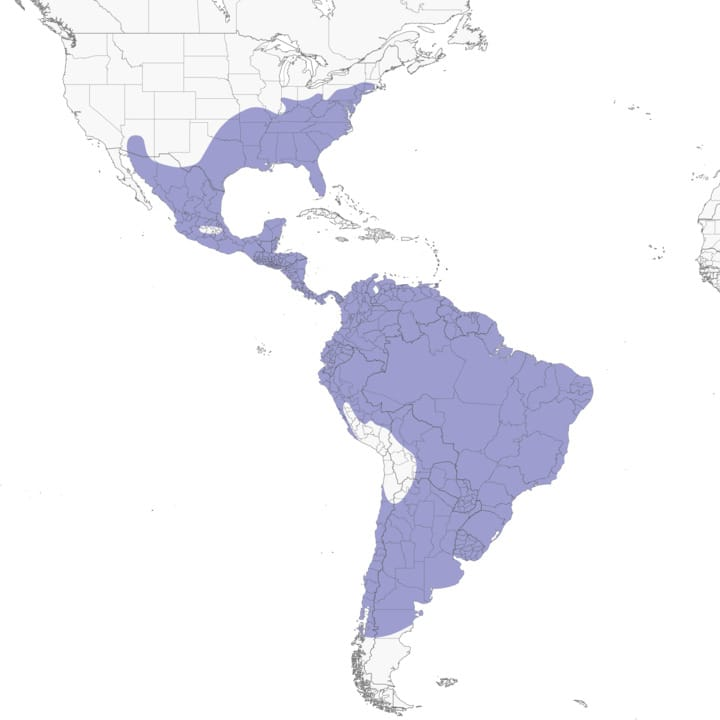
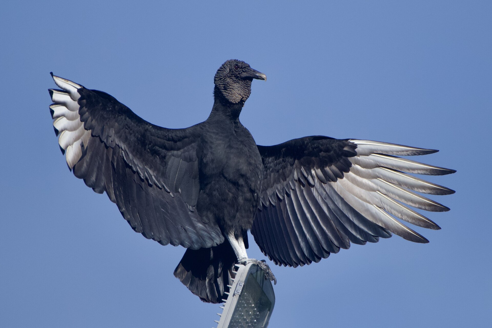
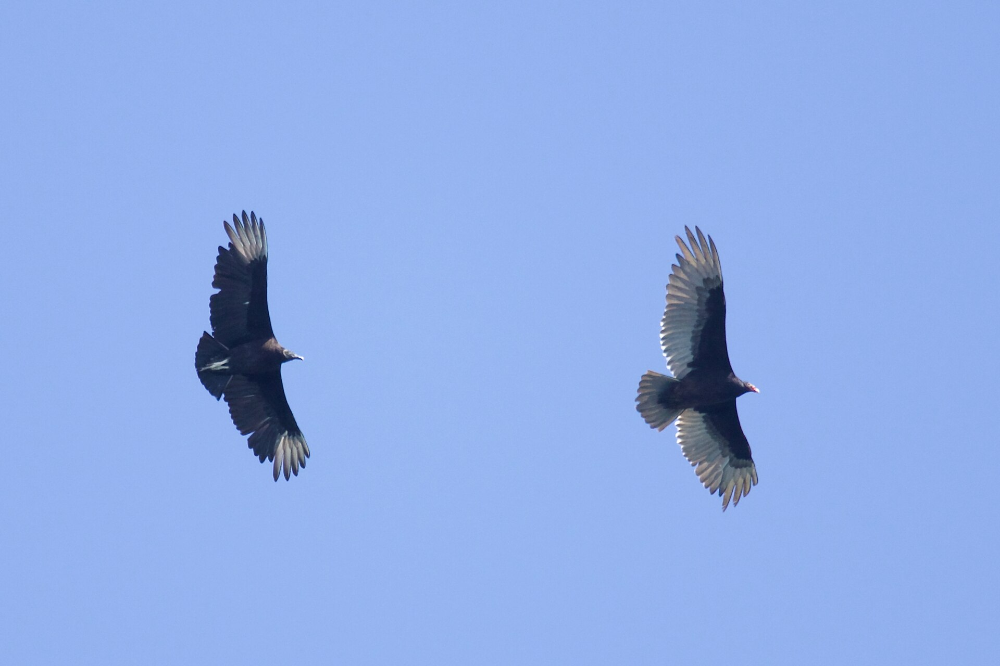
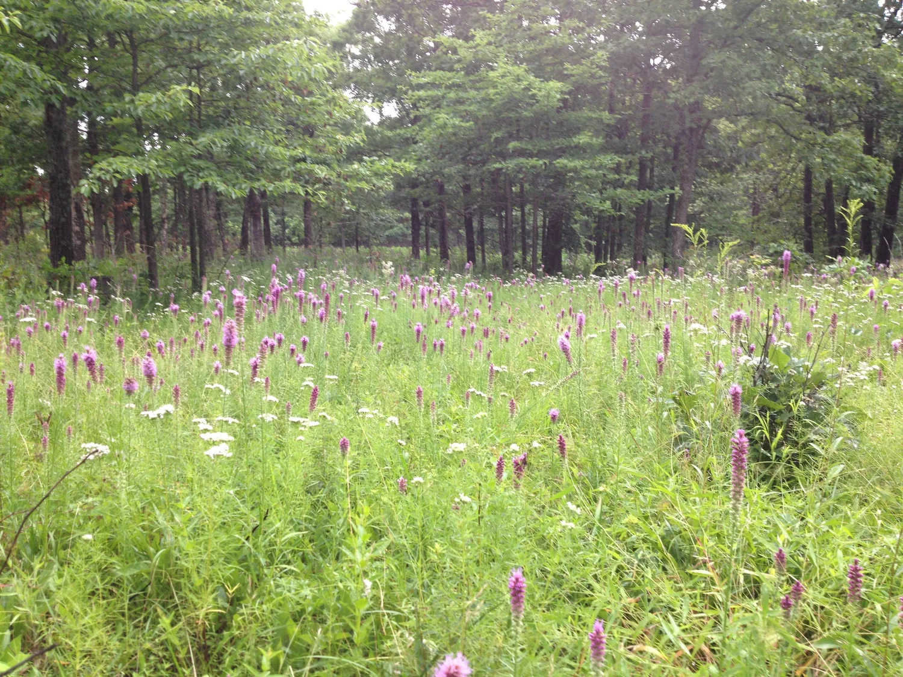

Scientific Classification
| Rank | Taxon |
|---|---|
| Kingdom | Animalia |
| Phylum | Chordata |
| Subphylum | Vertebrata |
| Class | Aves |
| Subclass | Neognathae |
| Order | Accipitriformes |
| Suborder | Cathartae |
| Family | Cathartidae |
| Genus | Coragyps Le Maout, 1853 |
| Species | C. atratus (Bechstein, 1793) |
Three subspecies are recognized based on size and plumage variation across the geographic range:[2]
- C. a. atratus: eastern North America, Central America, and northern South America
- C. a. brasiliensis: tropical South America east of the Andes
- C. a. foetens: Andes Mountains and Pacific coast of South America
Physical Profile
Size Range
| Measurement | Range |
|---|---|
| Body length | 56-74 cm |
| Wingspan | 133-167 cm |
| Body mass | 1.18-2.26 kg |
| Tail | Short and squared; approximately 20-25 cm |
Identification Markings
- Plumage — Entirely black, with a slight iridescent gloss on the wing coverts in good light; no sexual dichromatism
- Wing Pattern in Flight — Diagnostic white or silvery patches at the base of the primary flight feathers, visible on the underwing; the wingtips appear pale when viewed from below
- Head — Bare and featherless; gray to black wrinkled skin; small relative to body size; lacks the red coloration of the closely associated Turkey Vulture
- Bill — Short, strongly hooked; pale horn-colored to yellowish
- Tail — Short and squared, a key field mark distinguishing it from the Turkey Vulture's longer, rounded tail
- Flight Profile — Holds wings flat (not in a dihedral V-shape as Turkey Vultures do); flaps more frequently than Turkey Vultures when soaring[2]
Habitat and Geography
Habitats
The black vulture is an ecologically adaptable species occupying a wide range of open and semi-open environments. It avoids continuous dense forest interiors but readily exploits human-modified landscapes.[2]
- Agricultural land and pasture with livestock carcasses
- Open woodland and forest edges
- Urban and suburban areas, including garbage dumps and slaughterhouses
- Coastal plains, wetland margins, and estuaries
- Roadsides, where road-killed animals are frequently scavenged
Distribution
The black vulture has one of the widest distributions of any New World raptor, spanning much of the Western Hemisphere:[1]
- North America: resident from New Jersey and Ohio southward through all southeastern states; also common in Texas and expanding northward
- Central America: abundant throughout; present in all countries
- South America: found across the entire continent from Colombia and Venezuela south to southern Argentina and central Chile
The species' northern range limit has shifted progressively northward in recent decades, likely in response to climate warming and increased food availability from agriculture and road mortality.[1]
Distribution Map

Fig. 1. Geographic distribution of Coragyps atratus across North, Central, and South America. Source: All about Birds[1]
Ecology and Behavior
Feeding and Diet
The black vulture is an obligate scavenger and a keystone species in its ecosystems, performing essential carrion removal services that slow the spread of pathogens.[2]
| Food Source | Notes |
|---|---|
| Carrion (primary) | Carcasses of mammals, birds, reptiles, and fish; all sizes from insects to large ungulates |
| Garbage and refuse | Exploits landfill sites and human food waste extensively |
| Eggs | Raids nests of ground-nesting birds and sea turtles |
| Live prey | Occasionally kills very young, weak, or newborn animals including calves and piglets |
| Plant matter | Fruit and vegetable waste (rare; opportunistic) |
Behaviors and Adaptations
- Communal roosting: Gathers in large roosts, sometimes hundreds of individuals, on cell towers, dead trees, and rooftops
- Soaring: Exploits thermals for extended, energy-efficient soaring; rides updrafts to survey large areas for carcasses
- Kleptoparasitism on Turkey Vultures: Relies on the superior olfaction of Turkey Vultures (Cathartes aura) to locate food, then displaces them at the carcass through numerical dominance and aggression[2]
- Urohidrosis: Defecates on its own legs; evaporation of the liquid cools the bird (thermoregulation) and may have an antibacterial function
- Sunning (horaltic posture): Spreads wings while facing the sun to warm up, dry feathers, and possibly kill ectoparasites via ultraviolet radiation
Communication
The black vulture completely lacks a syrinx (the avian voicebox), rendering it incapable of true song or most vocalizations.[3]
- Vocalizations — Restricted to hisses, low grunts, and barks produced by forcing air through the trachea; used during threat displays and at the nest
- Visual Displays — Wing spreading, head bobbing, and bill gaping used to signal threat or dominance at carcasses and roost sites
- Olfactory Communication — Chemical cues from urohidrosis and skin secretions may play a role in individual recognition, though this is less studied than in Turkey Vultures
Life History Cycle and Breeding Behaviors
Black vultures are monogamous and form long-term pair bonds. Unlike most birds, they construct no nest structure.[2]
- Pair bond: Long-term; pairs often return to the same nest site across successive years
- Breeding season: Varies by latitude; typically January to March in the southern United States
- Nest site: No nest is built; eggs are laid directly on bare substrate in hollow logs, dense thickets, rocky cliff ledges, abandoned buildings, or ground-level in dense vegetation
- Clutch size: Usually 2 eggs (occasionally 1 or 3); pale gray-green with irregular brown blotches
- Incubation period: 37-41 days; both parents incubate
- Chick development: Chicks are altricial (helpless at hatch), covered in white down; brooded by both parents
- Fledging: At approximately 75-80 days post-hatch
- Post-fledging: Juveniles remain with parents for several months, learning to locate food
- Sexual maturity: 5-7 years
- Lifespan: Up to 25 years in the wild; over 30 years in captivity
Predators
Adult black vultures have very few natural predators. Their size, communal roosting, and deterrent behaviors (including projectile vomiting of acidic stomach contents) make them difficult prey.[2]
- Egg and chick predators: Raccoons (Procyon lotor), Virginia opossums (Didelphis virginiana), rat snakes (Pantherophis spp.)
- Adult predators (rare): Great Horned Owl (Bubo virginianus) may take roosting individuals at night; Bald Eagles may displace them at carcasses
- Anthropogenic mortality: Vehicle strikes and lead poisoning from ingesting bullet fragments in carcasses are significant causes of death across their range
Media and Supporting Visuals

Fig. 2. Adult Coragyps atratus. The bare gray head and short, squared tail distinguish this species from the Turkey Vulture. Photo: Wikimedia Commons.

Fig. 3. Coragyps atratus in flight, showing the diagnostic white primary patches and flat wing posture. Photo: Wikimedia Commons.

Fig. 4. Open agricultural land, southeastern United States, the primary habitat type across the core of the black vulture's North American range. Photo: southeastern grasslands institute.
References
- BirdLife International (2021). Coragyps atratus. IUCN Red List of Threatened Species 2021: e.T22697624A181820864. IUCN, Gland, Switzerland. IUCN Red List
- Buckley, N. J. (1999). Black Vulture (Coragyps atratus). In A. Poole and F. Gill (Eds.), The Birds of North America, No. 411. Academy of Natural Sciences, Philadelphia. Birds of the World
- Houston, D. C. (1994). Family Cathartidae (New World vultures). In J. del Hoyo, A. Elliott, and J. Sargatal (Eds.), Handbook of the Birds of the World, Vol. 2 (pp. 24-41). Lynx Edicions, Barcelona. All About Birds